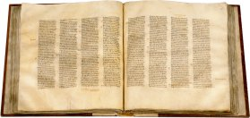
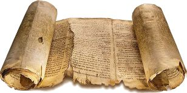

Соответствует ли современная Библия оригиналу
оригинала Синайского кодекса,
которому 1600 лет.
В течение многих веков Библия переписывалась и переводилась, откуда теперь мы знаем, что современный текст Библии не искажен и соответствует первоисточнику, оригиналу Библии?
Давайте рассмотрим этот вопрос подробнее. Как переводится Библия? Каким образом, к примеру, появился современный русский перевод Библии?
Изначально оригинал Библии был написан на древнегреческом языке (Новый Завет) и на древнееврейском языке (Ветхий Завет). Современные переводы Библии делаются непосредственно с текстов, написанных на этих оригинальных языках. Библия является очень известной книгой, поэтому ее перевод делается самым тщательным образом, и этот процесс занимает у ученых много лет.
Таким образом, то, что Библия много раз переводилась, никак не искажает ее текст, потому что переводы делаются с оригинальных языков, а не с других переводов.
Теперь давайте рассмотрим вопрос о том, как переписывание Библии повлияло на соответствие ее текста оригиналу. Ведь Библия очень древняя книга, и до того времени, как в 1440 г. был изобретен печатный станок, она переписывалась от руки.
Конечно, монахи и писцы переписывали текст Библии очень скурпулезно. Иудейские писцы, к примеру, использовали специальную систему проверки созданных ими копий, при которой они считали точное количество букв и слов в каждой переписываемой ими книге, чтобы не допустить не единой ошибки или искажения в Библии.[1] Однако, в течение такого длительного времени, которое исчисляется многими веками, в переписанные тексты все же закрадывались иногда ошибки. И это можно теперь заметить, изучая найденные археологами рукописи.
Однако, откуда ученые знают, что в той или иной рукописи есть ошибки или искажения? Это можно легко увидеть, сравнивая ее с большинством других рукописей и особенно с более ранними рукописями. Поэтому, те ошибки, которые вкрались в переписываемый текст в течение столетий, легко устраняются современной наукой, и они не влияют на текст Библии, которой мы пользуемся сейчас.
Синайский кодекс.
Современный текст Библии основан прежде всего на самых ранних рукописях, очень близких к первоисточнику. К примеру, полный текст Нового Завета представлен в рукописи 350 года, известной под названием Синайский Кодекс.[2] Кстати, раньше этот манускрипт хранился в Санкт-Петербурге, но в 1933 Советское правительство продало его Британскому музею, где он и находится сейчас.[3]
Кроме того, ученые располагают рукописями почти всех книг Нового Завета, которые датируются еще более ранним временем: 130-200 гг. Наиболее известные из этих рукописей это: Bodmer Papyri (200 г.), хранящийся в Женевской библиотеке Бодмера, Chester Beatty Papyri (200 г.), находящийся сейчас в библиотеке Дублина, и папирус Rylands P52 (130 г.) являющийся самым ранним отрывком из книги Нового Завета Евангелия от Иоанна, который хранится в библиотеке Университета Райланда, в Манчестере.
Изначально оригинал Евангелия от Иоанна был написан в 90-100 гг., поэтому мы имеем рукопись, которая датируется всего лишь 40 годами позже.[4] Также и ранние рукописи почти всех остальных книг Нового Завета очень близки к первоисточнику, они датируются всего лишь 50-150 годами позже. Изначально книги Нового Завета были написаны между 50 и 100 годами нашей эры.[5]
Кроме того, ученые имеют в своем распоряжении огромное количество рукописей Нового Завета, которые датируются более поздним временем. Их количество превышает 5600 древнегреческих рукописей содержащих полный или частичный текст Нового Завета.[6]
Все это делает Новый Завет наиболее подтвержденным историческим документом древности. Один из известных ученых в области библейских исследований, Ф.Ф. Брюс, писал по этому поводу:
Никакая другая древняя литература не имеет столь серьезного текстуального подтверждения, какое имеет Новый Завет.[7]
которой 2200 лет
Ветхий Завет был написан раньше, его написание было завершено около 400 г. до нашей эры. В настоящий момент ученые имеют более 200 рукописей, в которых представлены все книги Ветхого Завета кроме книги Есфирь, и которые датируются начиная с 250 г. до нашей эры и заканчивая 70 г. нашей эры.[8] Всего же имеется более 25000 рукописей и фрагментов книг Ветхого Завета, датируемых разными веками.[9]
Ни одно другое произведение древности не имеет столь большого числа дошедших до нас рукописей и столь малого промежутка времени отделяющего самые ранние из них от оригинала. К примеру, труды Платона и Аристотеля, написанные ими в 4 веке до н.э. представлены в менее чем 10 рукописях (Платона) и около 50 рукописях (Аристотеля). Самые ранние из них датируется 9 веком нашей эры, то есть около 1200 лет после написания оригинала.[10]
Приблизительно то же самое относится почти ко всем древним литературным произведениям, за исключением только Иллиады Гомера, которая представлена в более чем 1500 рукописях, самая ранняя из которых датируется около 500 лет после написания оригинала.[11] Хотя полная копия Иллиады тоже датируется только 10 веком н.э., то есть 1800 лет после оригинала.[12] И, тем не менее, Иллиада считается вторым после Библии наиболее текстуально подтвержденным произведением древности.
Таким образом, мы можем быть уверены в том, что современный текст Библии не искажен и вполне соответствует ее изначальному оригиналу. Это подтверждается сотнями ранних библейских рукописей, которые были написаны всего лишь 50 - 250 лет после оригинала, и десятками тысяч других более поздних копий.
Читать дальше:
- о Библии:
Другие статьи в разделе Наука о Боге
:
- о Боге:
Список литературы:
- [1] Ferris, Paul W. Guide to the Masoretic text, people.bethel.edu/~pferris/otcommon/Hebrew/hebrew-guides/HEBSTGD009.pdf
- [2] Codex Sinaiticus, codex-sinaiticus.net/ru/
- [3] Фонд Русский мир
- [4] Kenyon, Frederic G. The Story of the Bible, a Popular Account of How it Came to Us, bible-researcher.com/kenyon/sotb.html
- [5] Dating of the New Testament Books, freebeginning.com/new_testament_dates/
- [6] McDowell. The New Evidence that Demands a Verdict, 34. Также список некоторых рукописей представлен на legacy.earlham.edu/~seidti/iam/table_gkmss.html
- [7] Bruce. The Books and the Parchments: How We Got Our English Bible, p.178
- [8] Эти древнейшие рукописи были обнаружены в Кумране, в районе Мертвого моря и сейчас большая часть из них хранится в Израильском музее. McDowell, The New Evidence that Demands a Verdict, p.80
- [9] Более 24000 манускриптов и фрагментов книг Ветхого Завета хранится в Кембридже из коллекции манускриптов найденых в Кайро, Hebrew Bible Manuscripts in the Cambridge Genizah Collections: Vol. 4. Также большая коллекция манускриптов хранится в Российской Национальной Библиотеке Санкт-Петербурга.
- [10] Nussbaum, Martha. Aristotle's de Motu Animalium. Princeton University Press, 1985, p.13
- [11] West, Martin Litchfield. Studies in the text and transmission of the Iliad. K.G. Saur Verlag, 2001, p.86
- [12] Harvard University, Center for Hellenic Studies